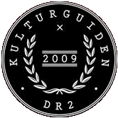
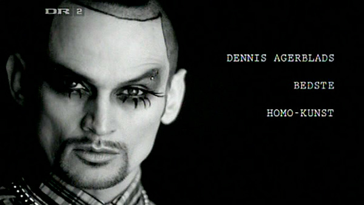
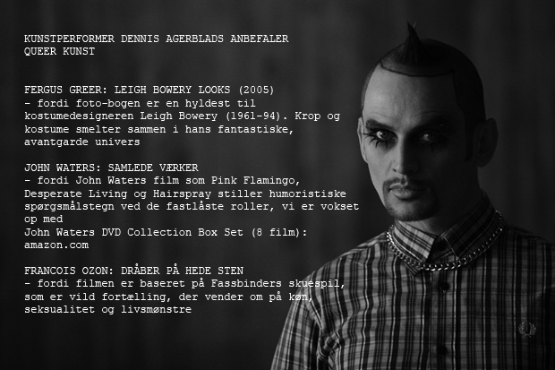
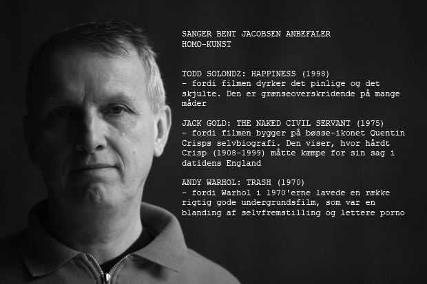
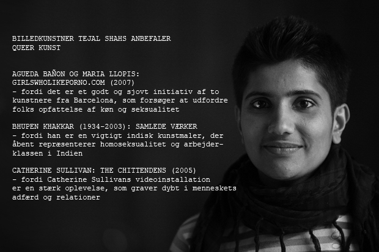

Dennis Agerblad i Kulturguiden, DR2, København. |
 Homo-kunstHver uge guider gæsterne i Kulturguiden på DR2 dig frem til de kulturtilbud, de ikke selv vil gå glip af. Denne uges tema er homo-kunst. "Jeg er bøsse og det er jeg glad for" Genudsendes:
|




Mere homo-kunst og kultur
|